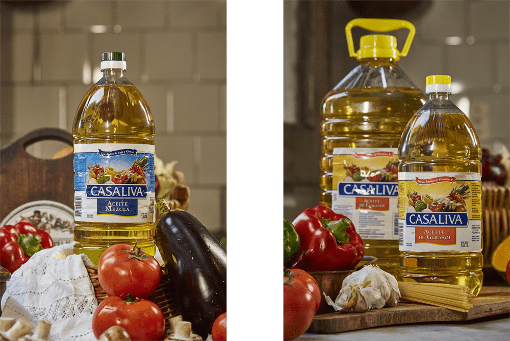

Sabor de casa,
calidad de planta.
Nuestra línea de aceites vegetales para el mercado local. Girasol, soja y mezclas en más de diez formatos, con el respaldo de 50 años de refinación propia.
Tres aceites para toda la cocina.
Cada aceite Casaliva pasa por nuestro proceso de refinación de ciclo cerrado. Calidad, pureza y rendimiento en cada envase, en cada preparación.
Natural, suave
y versátil.
Obtenido por refinación de semillas de girasol de primera calidad. Con sabor neutro y aroma delicado, es el aliado perfecto de cualquier cocina: desde frituras hasta aderezos.
- Alto contenido de vitamina E natural
- Sabor neutro sin alterar el plato
- Ideal para frituras y salteados
- Sin colesterol, bajo en grasas saturadas
- Punto de humo elevado

Equilibrio perfecto
en cada plato.
Una combinación inteligente de aceites de girasol y soja. La opción más popular por su relación precio-calidad y su adaptabilidad a cualquier tipo de preparación.
- Combinación equilibrada girasol + soja
- Excelente rendimiento por litro
- Sabor neutro que no interfiere
- Óptima relación precio-calidad
- Ideal para frituras y aderezos
Rendimiento
y economía.
Aceite de soja refinado de alta pureza. Recomendado para uso doméstico e institucional donde el rendimiento y la economía son prioritarios sin sacrificar calidad.
- Alta pureza y rendimiento
- Ideal para uso doméstico e institucional
- Excelente relación precio-litro
- Perfil nutricional equilibrado
- Gran versatilidad culinaria
Para cada necesidad.
Desde el hogar hasta el canal institucional. Todos los formatos en aceite de girasol, mezcla y soja.
¿Necesitás formatos especiales o private label? Contactanos →
Una marca nacida del campo y la familia.
Casaliva es la expresión más cercana al consumidor final de todo lo que Oligra representa: trabajo familiar, excelencia industrial y compromiso con la calidad de cada litro producido.
El nombre evoca lo que queremos que el aceite sea en cada cocina: un producto de casa, confiable, que acompaña a la familia en cada comida.
Contactar distribución →Sumá Casaliva
a tu negocio.
Contactanos para conocer precios, condiciones comerciales y disponibilidad de formatos. Respondemos en menos de 24 horas hábiles.
Hablar con ventas →